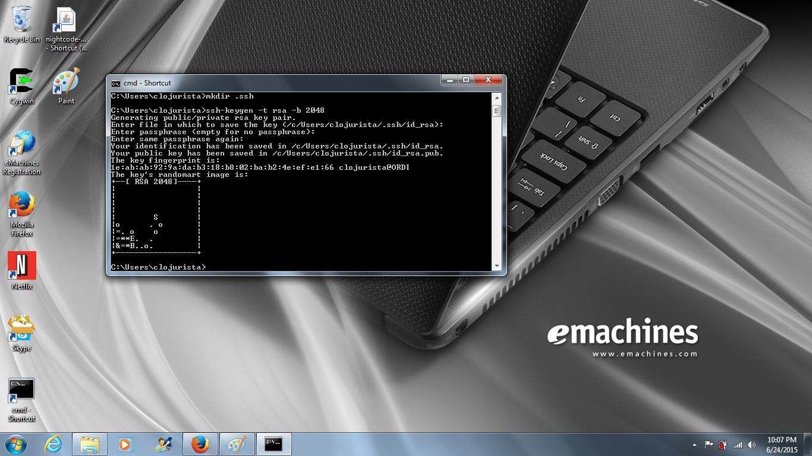

Create an SSH key¶
Go to the...
- prev section Install the Heroku Toolbelt
- new Setup instructions
- next section Setup github
Open a command terminal¶
Yes you will learn how to talk to the computer directly on the command line!
The instructions for opening a terminal vary by platform:
- Mac: Launch the Terminal application
- Windows: Launch cmd.exe
- Linux: Launch a Terminal
Create the .ssh directory¶
Now you have a terminal Window open you can go to your “HOME” directory.
On Mac and Linux this is almost certainly the directory your Terminal
window will start in (or you can type cd $HOME).
On Windows you can type cd %USERPROFILE%.
From here you can create a directory to store your SSH keys:
mkdir .ssh
Generate a new SSH key¶
Now you can actually create a new SSH key by typing in the following command and parameters:
ssh-keygen -t rsa -b 2048
You can see what this looks like in the screenshot below. You don’t have to choose a passphrase.. you can just leave it blank! Just press RETURN for all the questions.

Extra credit (not required for the installfest)¶
Typically developers do have a passphrase for their SSH keys... However this means that every time a service needs to access your private key that you are prompted for your passphrase. We skipped that here for simplicity.
They way to have better security and convenience is to
use an agent to cache your passphrase so you only have
to enter it once per session. On Linux you can use
ssh-agent
(part of the openssh-client package)
directly or as part of a desktop session
like Gnome with the seahorse utility.
On Mac...
On Windows...